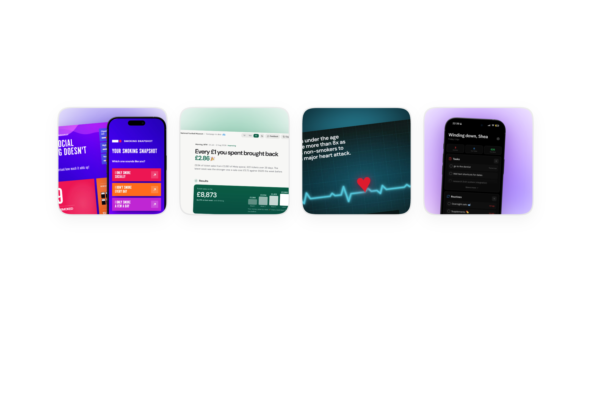
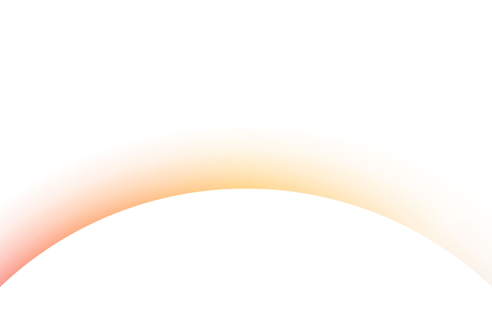

Always making something.


Smoking SnapshotJumpStartHeart HealthBrain Dump
See it in 3DScan the code, then point your camera at this side of the card.

Shea Wilson
Design engineer
design@sheawilson.uk
sheawilson.uk

Always making something.
See it in 3DScan the code, then point your camera at this side of the card.